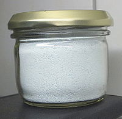

Купрум(ІІ) сульфат
Сульфат міді(ІІ)

Сульфат міді ( англ. cuprous sulphate, англ. cupric sulphate, нім.Kupfersulfat n) - сіль міді та сірчаної кислоти, в безводному стані CuSO4, біла дрібнокристалічна речовина, при поглинанні води стає синьою або блакитною.
Властивості
Добре розчиняється у воді. З водного розчину кристалізується у вигляді кристалогідрату CuSO4 • 5H2O синього кольору, відомого під назвою мідний купорос (синій камінь). При температурі вище 96°C в рівновазі з водним розчином перебуває тригідрат : CuSO4 • 3H2O.
Кристалогідрат зневоднюється прогріванням в мілкому керамічному посуді (з побутових предметів для цього може підійти керамічна підставка під вазони або миска для тварин) при помішуванні скляною або іншою термостійкою неметалевою паличкою при обережному нагріванні (перегрів призведе до забруднення в сірий колір продуктами більш глибокого розкладу). Оскільки залишковий тиск водяної пари над безводним купрум сульфатом вищий, ніж над багатьма іншими зневоднюючими речовинами, його можна також отримувати зневодненням кристалогідрату в ексикаторі над іншими поглиначами води при звичайній температурі.

Оскільки мідь малоактивний метал, з розчинів купрум сульфату вона може бути витіснена більшістю інших металів, наприклад залізом:
Fe + CuSO4 → Cu + FeSO4
Тому сіль, а тим більше розчин, не варто зберігати в металевому посуді.
Застосування
Мідний купорос широко застосовується для електролітичного отримання і рафінування міді, електролітичного покриття міддю інших металів, а також у боротьбі з шкідниками сільського господарства у вигляді водної суспензії утвореної з вапном відомої як бордоська рідина:
CuSO4+Ca(OH)2+2H2O→CaSO4·2H2O↓+Cu(OH)2↓.